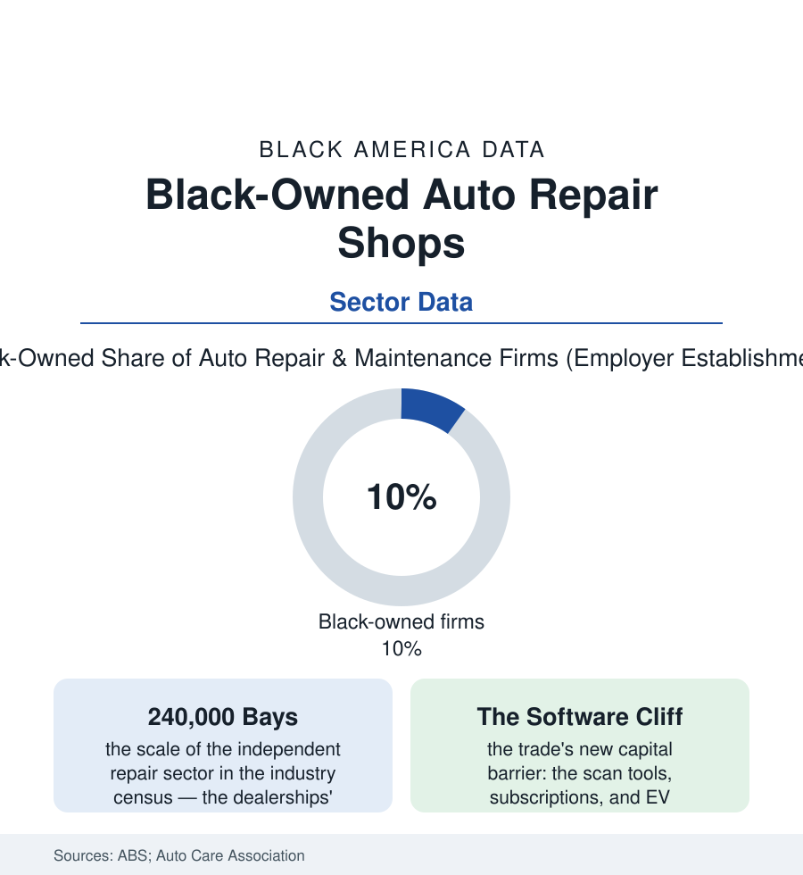

Black Business
The Repair Shop: Wrenches, Trust, and the Last Trade You Can't Offshore
Auto repair is America's archetypal skilled-trade business — local, physical, trust-based — and Black shop owners hold a working share of it as the EV era rewires the trade. The repair file.

The auto repair shop is the skilled trades' storefront: a business that cannot be offshored, automated away, or done from a laptop — the car breaks where it lives, and someone local, trusted, and good with their hands gets the call. Black owners hold roughly a tenth of the nation's repair firms in the Census Bureau's business survey, shops rooted in the same neighborhoods as their customers, in a trade whose economics the electric transition is about to renegotiate. This article reads the repair file.
The Trade's Structure and the Shop's Place in It
The industry sorts into three tiers in the association's data — the dealerships' service departments (warranty work and the newest cars, the highest labor rates), the chains and franchises (the tire-and-brake names, the muffler row), and the independents — the general-repair garages whose competitive asset the consumer surveys name without hesitation: the mechanic who knows your car and tells you the truth. The Black shop's history runs through the employment file's technician rows (the trade learned in the military's motor pools, the dealerships' back bays, the gas-station era's service islands — the mid-century full-service station among the Black business districts' standard tenants, its disappearance into self-serve one of the business file's quiet mass extinctions) into the ownership pattern the survey records: single-location, family-staffed, its book of regulars its balance sheet. The economics are the trades' classic: the labor rate against the flat-rate book, the parts margin, the bay utilization — and the trust premium that the information asymmetry of car repair creates (the customer cannot verify the diagnosis; the shop that doesn't invent work becomes a multi-generational institution, its waiting room a neighborhood senate, its owner's son or daughter, in the succession data, increasingly the second-generation operator with a business degree and a scanner). The barriers are the file's usual with a mechanical accent: the building and lifts' capital, the parts-house credit lines, and the technician shortage — the BLS projecting the trade short tens of thousands of technicians against retirements, the dealerships and chains bidding up the experienced hands the independent trained.
The Electric Renegotiation
The transition now reprices the whole trade, and the repair file's forward rows divide by capital: the EV's mechanical mercy (fewer moving parts, no oil, brakes that last — the maintenance revenue per car falling in every credible projection, the shop's bread-and-butter services thinning by design) against its new priesthood (the high-voltage certification, the battery diagnostics, the software subscriptions and scan-tool licenses whose annual costs the trade press itemizes like a second rent — the capital threshold sorting the next generation of shops into the equipped, who will service the electric fleet, and the stranded, aging out with the combustion fleet they mastered). The right-to-repair fight is the transition's policy front in the legislative data: the manufacturers' locked diagnostics and parts pairing against the independents' statutory claims (the state laws and the federal proposals tracked by the trade associations — the Massachusetts law and its court fights the template), a fight whose stakes for the Black shop are existential in the plain sense: access to the car's data is access to the trade's future. The adaptation rows are already visible in the trade data — the shops adding EV certification as a marketing flag in the Black suburbs, the hybrid specialty as the bridge trade, the fleet contracts (the delivery vans, the municipal fleets) as the volume play — and the apprenticeship pipeline behind them (the trade schools and community-college auto programs of the education file feeding the bays, the tool companies' student programs) deciding whether the next Black master technician becomes the next Black shop owner or the dealership's foreman. The file's constant through the transition is the one the consumer surveys keep certifying: the car still breaks where it lives, and trust is still the local shop's unpatentable product.
Reading the Repair Data
Ten percent of the nation's repair firms, holding the trust of the neighborhoods that raised them, facing a technological cliff with a capital price: the repair file is the business section's parable of the trades — the work is permanent, the tools are changing, and the bridge between the two is money and training. The census counts the shops. Every driver in the neighborhood knows exactly which ones matter, and why.
More in Black Business
Black-Owned Businesses: Counts, Receipts, and the Representation Gap
About 161,000 Black-owned employer firms and three million solo ventures: how the Census Bureau counts Black business ownership, where firms concentrate, and the gap between population share and business share.
Black Median Net Worth: The Wealth Gap in Federal Reserve Data
The Federal Reserve puts Black median family net worth at $44,900, against $285,000 for White families — about 16 cents on the dollar. The widest gap in economic data.
Black Buying Power: The $1.8 Trillion Consumer Economy
Black buying power is estimated at about $1.8 trillion — larger than the economy of most nations. What the figure measures, who produces it, and what it buys.
Source: U.S. Census Bureau Annual Business Survey; U.S. Bureau of Labor Statistics technician data; Auto Care Association industry reports; ASE certification statistics.